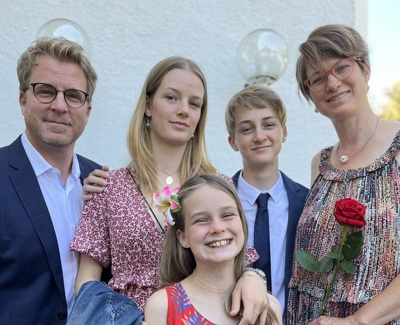

Über mich
Allgemeines:
Hey! Mein Name ist Dominik Soeren Meister, ich bin momentan 15 Jahre alt und wohne in der Region Bern. Ursprünglich komme ich aus München in Deutschland, wohne jedoch schon seit ich 3 Jahre alt bin in der Schweiz. Grundsätzlich bin ich eine eher offene und hilfsbereite Person, die versucht zu helfen, wo sie kann. Ich unternehme sehr gerne verschiedenste Dinge mit meinen Freunden wie zum Beispiel das Gamen.
Meine Familie:
Ich wohne mit meiner ganzen Familie zusammen und bin zwischen meinen Schwestern das mittlere Kind in der Familie.
Da wäre mein Vater Manuel Meister im jungen Alter von 49 Jahren. Dieser arbeitet in der Unternehmensberatungsbranche als IT-Unternehmensberater bei Accenture. Das Interesse an der Informatik stammt grösstenteils von ihm, da er schon in meiner Kindheit mich mit seinen Kenntnissen über Computer in die Welt der Informatik verführt hatte.
Meine Mutter Judith Meister ist 47 Jahre alt und studiert gerade soziale Arbeit an der Hochschule Luzern.
Die ältere der beiden Schwestern, die dieses Jahr den Maturitätsabschluss macht, ist von den beiden Schwestern die angenehmere.
Dann gibt es noch meine jüngere Schwester. Obwohl sie hin und wieder etwas nervig vorkommen kann, ist sie jedoch auch ein sehr wichtiger Teil der Familie.
